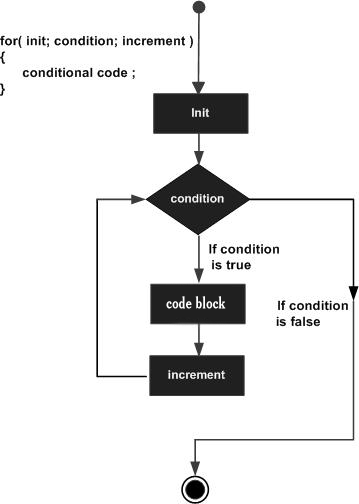
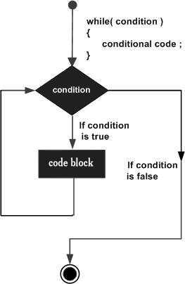
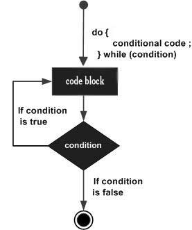
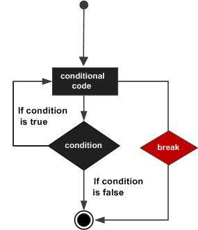
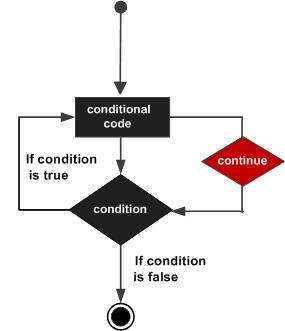

Vòng lặp là gì?
Định nghĩa
Vòng lặp (loop) là một cấu trúc cho phép thực hiện lặp đi lặp lại một đoạn mã nhiều lần cho đến khi điều kiện lặp không còn đúng.
Ví dụ đời thường
Bạn muốn in dòng "Hello" 10 lần:
Cách không hiệu quả:
console.log("Hello");
console.log("Hello");
console.log("Hello");
console.log("Hello");
console.log("Hello");
console.log("Hello");
console.log("Hello");
console.log("Hello");
console.log("Hello");
Cách hiệu quả (dùng vòng lặp):
console.log("Hello");
}
Tại sao cần vòng lặp?
- Giảm code trùng lặp: Viết 1 lần, chạy nhiều lần
- Xử lý dữ liệu: Duyệt mảng, danh sách, đối tượng
- Tự động hóa: Thực hiện tác vụ lặp mà không cần can thiệp thủ công
- Tính toán: Xử lý các bài toán có tính chất lặp
Lưu ý quan trọng
Luôn đảm bảo vòng lặp có điều kiện dừng. Vòng lặp vô hạn sẽ làm chương trình treo!
Vòng lặp for
Định nghĩa
Lặp lại một khối lệnh với số lần xác định trước, thông qua bộ đếm.
Lưu đồ thuật toán

Cú pháp
// code thực thi mỗi lần lặp
}
Cách hoạt động:
- Khởi tạo: Chạy một lần duy nhất khi bắt đầu
- Kiểm tra điều kiện: Nếu đúng → vào thân vòng lặp, nếu sai → thoát
- Thực thi code trong thân vòng lặp
- Cập nhật biến đếm: Tăng/giảm giá trị biến
- Quay lại bước 2 cho đến khi điều kiện sai
Ví dụ thực tế
console.log(`Lần thứ ${i}`);
}
// Output:
// Lần thứ 1
// Lần thứ 2
// ...
// Lần thứ 5
Lưu ý quan trọng
Nếu điều kiện sai ngay từ đầu, vòng lặp sẽ không chạy lần nào.
// Không chạy vì 10 < 5 là SAI
console.log("Không bao giờ chạy");
}
Thử nghiệm vòng lặp for
Kết quả:
Vòng lặp while
Định nghĩa
Lặp lại khi điều kiện còn đúng, không biết trước số lần lặp.
Lưu đồ thuật toán

Cú pháp
// code thực thi nếu điều kiện đúng
// phải có code thay đổi điều kiện để tránh lặp vô hạn
}
Cách hoạt động (while loop):
- Kiểm tra điều kiện: Nếu đúng → vào thân vòng lặp, nếu sai → thoát
- Thực thi code trong thân vòng lặp
- Cập nhật biến điều kiện: Tăng/giảm giá trị biến liên quan
- Quay lại bước 1 để kiểm tra điều kiện lần nữa
- Kết thúc khi điều kiện trả về false
Ví dụ thực tế
while (i < 3) {
console.log(`i = ${i}`);
i++; // QUAN TRỌNG: Cập nhật biến điều kiện
}
// Output: i = 0, i = 1, i = 2
CẢNH BÁO: Vòng lặp vô hạn
Nếu không cập nhật điều kiện, vòng lặp sẽ chạy mãi mãi!
while (i < 3) {
console.log("VÒNG LẶP VÔ HẠN!");
// QUÊN: i++
// i luôn = 0 < 3 → điều kiện luôn đúng
}
Thử nghiệm vòng lặp while
Kết quả:
Vòng lặp do-while
Định nghĩa
Lặp lại khối lệnh ít nhất 1 lần, sau đó tiếp tục nếu điều kiện đúng.
Lưu đồ thuật toán

Cú pháp
// thực thi ít nhất 1 lần
} while (condition);
Cách hoạt động (do...while loop):
- Thực thi code trong thân vòng lặp: Chạy ít nhất 1 lần
- Kiểm tra điều kiện: Nếu đúng → tiếp tục lặp, nếu sai → thoát
- Quay lại bước 1 nếu điều kiện vẫn còn đúng
- Kết thúc khi điều kiện trả về false
Ví dụ thực tế
do {
console.log(i);
i++;
} while (i < 3);
// Output: 5 (chạy 1 lần dù điều kiện sai)
Điểm khác biệt với while
- do-while: Thực thi → kiểm tra điều kiện
- while: Kiểm tra điều kiện → thực thi
- do-while luôn chạy ít nhất 1 lần, kể cả khi điều kiện sai ngay từ đầu
So sánh các vòng lặp
| Đặc điểm | for | while | do-while |
|---|---|---|---|
| Kiểm tra điều kiện | Trước mỗi lần lặp | Trước mỗi lần lặp | Sau mỗi lần lặp |
| Số lần thực thi ít nhất | 0 lần | 0 lần | 1 lần |
| Thích hợp khi | Biết trước số lần lặp | Không biết số lần lặp | Luôn cần chạy ít nhất 1 lần |
| Ví dụ ứng dụng | Duyệt mảng, tính toán định sẵn | Đọc file, xử lý sự kiện | Menu, xác thực đầu vào |
Thử nghiệm vòng lặp do-while
Kết quả:
Break & Continue
Định nghĩa
break và continue là hai từ khóa điều khiển vòng lặp, giúp thay đổi luồng thực thi bên trong vòng lặp.
1. break - Thoát vòng lặp

Mục đích:
Thoát hoàn toàn khỏi vòng lặp ngay lập tức khi gặp điều kiện nhất định.
if (i === 5) {
break; // Thoát vòng lặp khi i = 5
}
console.log(`Số: ${i}`);
}
console.log("Đã thoát vòng lặp");
// Output: 1, 2, 3, 4, "Đã thoát vòng lặp"
Ứng dụng thực tế của break
if (i % 7 === 0) {
console.log(`Số đầu tiên chia hết cho 7 là: ${i}`);
break; // Tìm thấy rồi, không cần tìm tiếp
}
}
// Output: "Số đầu tiên chia hết cho 7 là: 7"
2. continue - Bỏ qua vòng lặp hiện tại

Mục đích:
Bỏ qua phần còn lại của vòng lặp hiện tại và chuyển sang vòng lặp tiếp theo.
if (i === 3) {
continue; // Bỏ qua khi i = 3
}
console.log(`Số: ${i}`);
}
// Output: 1, 2, 4, 5 (bỏ qua số 3)
Ứng dụng thực tế của continue
if (i % 2 === 0) {
continue; // Bỏ qua số chẵn
}
console.log(`Số lẻ: ${i}`);
}
// Output: 1, 3, 5, 7, 9
3. So sánh break và continue
| Tiêu chí | break | continue |
|---|---|---|
| Tác dụng | Thoát hoàn toàn khỏi vòng lặp | Bỏ qua vòng lặp hiện tại |
| Vòng lặp tiếp theo | Không thực hiện | Vẫn thực hiện |
| Khi nào dùng | Khi đã tìm thấy kết quả hoặc gặp lỗi | Khi muốn bỏ qua một số trường hợp đặc biệt |
| Ví dụ | Tìm kiếm, xử lý lỗi, điều kiện dừng | Lọc dữ liệu, bỏ qua giá trị không hợp lệ |
Lưu ý quan trọng
- Cả break và continue chỉ có tác dụng trong vòng lặp chứa nó
- Không thể dùng break/continue bên ngoài vòng lặp
- Trong vòng lặp lồng nhau, break/continue chỉ ảnh hưởng đến vòng lặp gần nhất
4. break và continue trong while
break trong vòng lặp while
while (i <= 5) {
if (i === 4) {
break; // Thoát khi i = 4
}
console.log(`i = ${i}`);
i++;
}
// Output: 1, 2, 3
continue trong vòng lặp while
while (i < 5) {
i++;
if (i === 3) {
continue; // Bỏ qua khi i = 3
}
console.log(`i = ${i}`);
}
// Output: 1, 2, 4, 5
Cảnh báo với continue trong while
Khi dùng continue trong vòng lặp while, phải đảm bảo biến điều kiện được cập nhật trước khi gọi continue, nếu không sẽ gây vòng lặp vô hạn!
Thử nghiệm break & continue
Kết quả:
Ghi nhớ nhanh
- break: Dừng toàn bộ vòng lặp (như nút DỪNG)
- continue: Bỏ qua vòng hiện tại (như nút BỎ QUA)
- Dùng được cho: for, while, do-while
- Hữu ích cho: lọc dữ liệu, tìm kiếm, xử lý ngoại lệ
Bài tập demo
Bài 1: Tính tổng từ 1 đến n
Đề bài:
Nhập vào số nguyên dương n, tính và in tổng các số từ 1 đến n.
Yêu cầu:
- Nhập n từ người dùng
- Tính tổng từ 1 đến n
- In ra kết quả
Test case:
Expected Output: Tổng = 10
Lời giải:
let sum = 0;
for (let i = 1; i <= n; i++) {
sum += i; // sum = sum + i
}
console.log("Tổng =", sum);
Bài 2: In bảng cửu chương n
Đề bài:
Viết chương trình yêu cầu người dùng nhập số n, in bảng cửu chương từ n × 1 đến n × 10.
Yêu cầu:
- Nhập n từ prompt()
- In ra bảng cửu chương từ 1 đến 10
- Định dạng: n x i = kết_quả
Test case:
Expected Output:
5 x 1 = 5
5 x 2 = 10
...
5 x 10 = 50
Lời giải:
for (let i = 1; i <= 10; i++) {
console.log(`${n} x ${i} = ${n * i}`);
}
Bài 3: Kiểm tra số nguyên tố
Đề bài:
Viết chương trình kiểm tra xem một số có phải số nguyên tố hay không.
Số nguyên tố là gì?
Số nguyên tố là số tự nhiên lớn hơn 1 chỉ có hai ước số là 1 và chính nó.
Ví dụ: 2, 3, 5, 7, 11, 13, 17, 19, 23, 29...
Cách kiểm tra số nguyên tố:
- Nếu n < 2 → không phải số nguyên tố
- Duyệt tất cả các số từ 2 đến √n
- Nếu n chia hết cho bất kỳ số nào → không phải số nguyên tố
- Ngược lại → là số nguyên tố
Test case:
Input: n = 10 → Output: Không phải số nguyên tố
Lời giải:
let isPrime = true;
if (n < 2) {
isPrime = false;
} else {
for (let i = 2; i <= Math.sqrt(n); i++) {
if (n % i === 0) {
isPrime = false;
break;
}
}
}
console.log(isPrime ? "Là số nguyên tố" : "Không phải số nguyên tố");
Thử nghiệm bài tập demo
Kết quả:
Bài 1: In số đảo ngược
Đề bài: Nhập vào một số nguyên dương n, in ra số đảo ngược.
Yêu cầu:
- Dùng while hoặc do...while
- Ví dụ: n = 1234 → Output: 4321
| Input | Expected Output |
|---|---|
| n = 123 | 321 |
| n = 100 | 1 |
Bài 2: Tính tổng các số lẻ từ 1 đến n
Đề bài: Nhập số nguyên dương n, tính tổng các số lẻ từ 1 đến n.
Yêu cầu:
- Dùng vòng lặp for hoặc while
- Chỉ cộng các số lẻ
| Input | Expected Output |
|---|---|
| n = 10 | Tổng số lẻ = 25 (1+3+5+7+9) |
| n = 5 | Tổng số lẻ = 9 (1+3+5) |
Bài 3: Tính giai thừa n!
Đề bài: Nhập số nguyên n, tính giai thừa n! = 1 × 2 × 3 × ... × n
Yêu cầu:
- Dùng vòng lặp for
- In theo định dạng: n! = ...
| Input | Expected Output |
|---|---|
| n = 5 | 5! = 120 |
| n = 3 | 3! = 6 |
Bài 4: Đếm số chia hết cho 3 trong đoạn 1 đến n
Đề bài: Đếm xem có bao nhiêu số chia hết cho 3 trong khoảng từ 1 đến n.
Yêu cầu:
- Dùng vòng lặp for
- In: Có ... số chia hết cho 3
| Input | Expected Output |
|---|---|
| n = 10 | Có 3 số chia hết cho 3 (3, 6, 9) |
| n = 5 | Có 1 số chia hết cho 3 (3) |
Bài 5: Đếm chữ số lớn nhất
Đề bài:
- Tìm chữ số lớn nhất trong n
- Đếm số lần xuất hiện của chữ số đó
Ví dụ: n = 987439389 → chữ số lớn nhất là 9, xuất hiện 2 lần
| Input (n) | Expected Output |
|---|---|
| 987439389 | Chữ số lớn nhất: 9, Số lần xuất hiện: 2 |
| 1234567899 | Chữ số lớn nhất: 9, Số lần xuất hiện: 2 |
| 88888888 | Chữ số lớn nhất: 8, Số lần xuất hiện: 8 |
Gợi ý:
- Dùng while (n > 0)
- Lấy chữ số cuối: n % 10
- So sánh với maxDigit
- Nếu bằng maxDigit → tăng biến đếm
Bài 6: Kiểm tra số hoàn hảo
Đề bài: Kiểm tra số nguyên dương n có phải số hoàn hảo không.
Số hoàn hảo là số có tổng các ước số thật (không tính chính nó) bằng chính nó.
Ví dụ:
- 6 → 1 + 2 + 3 = 6 → hoàn hảo
- 28 → 1 + 2 + 4 + 7 + 14 = 28 → hoàn hảo
| Input (n) | Output |
|---|---|
| 6 | Là số hoàn hảo |
| 28 | Là số hoàn hảo |
| 12 | Không phải số hoàn hảo |
| 496 | Là số hoàn hảo |
Gợi ý:
- Duyệt i từ 1 đến n-1
- Nếu n % i === 0 → cộng i vào tổng
- Sau vòng lặp, nếu tổng == n → là số hoàn hảo